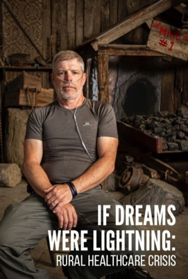

About the film
With IF DREAMS WERE LIGHTNING, Ramin Bahrani explores a precarious community ill-equipped to handle catastrophe, and in so doing captures the human cost of inequality, a moral failure in the richest nation in the world.
At the festival
- 2023 Shortcuts Program 1 · Shortcuts Program 1 · Friday, November 3, 2023 · 12:00 PM · Martin Luther King, Jr. Memorial Library
Sessions about this film
- 2023 · Fri Nov 3 · 12:00 PMScreening eventShortcuts Program 1